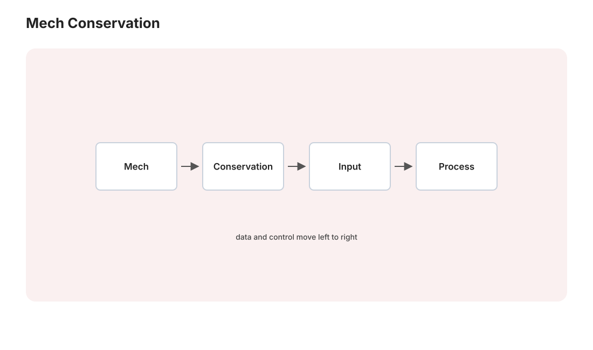

本页目录
力学 I · 牛顿力学与守恒律
对标：任何理论力学教材开篇 / Kleppner–Kolenkow ｜ 前置：数分 II/V、ode 线 牛顿力学是全部物理的原型：给定力，运动由二阶 ODE 决定。本页把框架立严（三定律的真实逻辑地位）、把三大守恒律从方程中推出来，并给出"守恒律 = 求解捷径"的方法论——它是下一页变分力学的铺垫，也是 Noether 定理的直觉预演。
学习层：同一段运动，换系统边界和参考系后还守恒吗？
1. 先把自由体图的边界画出来
取一维两物体碰撞作为最小模型：
若把两个物体一起作为系统，碰撞力是内部力；若只画物体 1 的自由体图，同一个接触力又是作用在它身上的外力。这个“内/外”不是力的名字，而是由系统边界决定的。惯性系中
所以孤立碰撞的总动量守恒来自内部冲量成对抵消，而不是来自“每个物体的动量都不变”。弹性碰撞还要额外假设动能守恒；仅有第三定律并不足以保证弹性。
2. 先预测：三条容易混淆的账
打开实验台前，先回答三个问题：
- 对上面的孤立碰撞，内部冲量一正一负时，单个物体的动量是否各自守恒，还是只有总动量守恒？
- 把一个恒力粒子放进加速参考系后，若仍写成 \(m\mathbf a'=\mathbf F\) 而不加惯性力，方程残差会消失还是留下 \(-m\mathbf A_{\mathrm{frame}}\)？
- 中心力只保证关于哪个原点的角动量不变；把原点平移、让原点移动，力矩式是否仍能原封不动地写成 \(\dot{\mathbf L}=\boldsymbol\tau\)？
揭示后，实验把自由体/冲量、参考系、角动量原点和轨迹离散化分成四栏。每栏的数值都标出其假设，不把一条有限时间步轨迹伪装成守恒定理。
3. 参考系与外冲量：方程先于图像
在惯性系中，单粒子方程是
若参考系相对惯性系有平动加速度 \(\mathbf A_F\)，相对加速度满足 \(\mathbf a'=\mathbf a-\mathbf A_F\)，因此
右侧第二项是该非惯性系中的惯性力。旋转系还会增加离心、Coriolis 和 Euler 项；不能看到一张相对轨迹就直接套惯性系方程。
对多粒子系统，把每个粒子的方程相加：
这里要求内部力按第三定律成对、作用在同一时刻且方向相反；电磁延迟、连续介质应力和约束的建模若不满足这个简化，必须回到更完整的动量通量账本。外冲量不为零时，总动量的变化正好等于它，不能把“系统内部很强”误读成“总动量仍守恒”。
4. 角动量的原点条件
关于固定原点 \(O\)，多粒子系统的一般式先写成
成对内部力反向只保证线动量账相消；要让内部总力矩也相消，还需它们沿两粒子连线（中心内力），或更一般地证明内部净力矩/应力通量为零。对单粒子中心力，\(\mathbf F\parallel(\mathbf r-\mathbf r_O)\) 只保证关于这个同一个 \(O\) 的力矩为零。平移原点后，力的作用线未必仍通过新原点，角动量就可能变化。若原点以速度 \(\mathbf V_O\) 移动，而仍采用绝对动量 \(\mathbf P\) 定义 \(\mathbf L_O=(\mathbf r-\mathbf r_O)\times\mathbf P\)，则
因此“零力矩所以角动量守恒”至少要写清楚原点固定、力矩关于哪个点计算，以及是否存在外力矩。对刚体还需把质心平动和绕质心转动的两笔账分开。
5. 动手与静态后备：精确律不等于有限步算法
实验的恒加速度轨迹用闭式定律
作为“精确”参考，再用显式 Euler 的有限步 \(\mathbf r_{k+1}=\mathbf r_k+h\mathbf v_k\)、 \(\mathbf v_{k+1}=\mathbf v_k+h\mathbf a\) 画离散路径。Euler 路径随着 \(h\to0\) 可收敛到闭式解，但单个有限步不必精确保持能量、角动量或轨道几何。实验显示的是误差证据；守恒结论仍来自连续方程及其边界假设。
JavaScript 失效时的静态 fallback：默认取孤立一维弹性碰撞 \((m_1,m_2)=(1,2)\)、\((v_1,v_2)=(2,-1/2)\)。解析碰撞后 [ (v_1',v_2')=(-4/3,7/6), ] 所以 \(P_{\mathrm{before}}=P_{\mathrm{after}}=1\)；两物体受到的内部冲量分别为 \(-10/3\)、\(+10/3\)，总内部冲量为 0。以下三行是不同条件的最小账本：
| 账本 | 解析关系 | 默认读数 | 不能推出什么 |
|---|---|---|---|
| 惯性系恒力 | \(m a=F\)；加速系为 \(m a'=F-mA_F\) | \(F=1.2,\ A_F=0.5\) 时 \(a'=0.7\) | 不能在非惯性系省略惯性力 |
| 角动量原点 | \(\dot L_O=\tau_O\)（固定 \(O\)） | \(\mathbf r=(2,1),\mathbf F=(-1,-1/2)\) 关于 \(O=(0,0)\) 时 \(\tau=0\) | 平移到 \(O=(0,1/2)\) 后 \(\tau=-1/2\) |
| 有限步轨迹 | 闭式 \(\mathbf r(t)\) 对比 Euler | \(\mathbf r_0=(0,0),\mathbf v_0=(1,2),\mathbf a=(0,-1),T=4,N=8\) 时精确 \(y=0\)、Euler \(y=1\) | 有限步误差不是连续守恒律的反例 |
“无外冲量”只对选定的封闭系统成立；一条看似平滑的轨迹也不能替代自由体图、参考系和原点条件。曲线和冲量表是固定参数的有限计算，定理级结论必须回到 Newton 方程及其假设。
6. 定理级结论与失败边界
- 定理级：惯性系中 \(m\mathbf a=\mathbf F\)；封闭系统的内部冲量在成对相消条件下不改总动量；固定原点的角动量方程还要保留内部力矩，只有中心成对内力或零内部净力矩时才约成 \(\dot{\mathbf L}_O=\boldsymbol\tau_O^{\mathrm{ext}}\)。
- 有限证据：实验只显示一个碰撞参数、一种参考系加速度、有限个时间步和有限个原点选择；通过一次账本不等于对所有外力和初值的证明。
- 失败边界：改变系统边界会改变内外力分类；非惯性系要加惯性力；移动原点要保留 \(\!-\mathbf V_O\times\mathbf P\) 修正；把 Euler 轨迹的漂移叫作精确动力学违反，是把数值离散误差混进定理层。

1. 三定律的逻辑结构
第二定律 \(\mathbf F = m\ddot{\mathbf r}\) 是核心：给定力场，轨迹是二阶 ODE 的解。只有当力对状态满足 Picard–Lindelöf 所需的局部 Lipschitz 等条件、且解未离开模型定义域时，初位置与初速度才局部唯一决定轨迹；奇异碰撞势或非光滑接触需要另行处理。第一定律定义惯性系；第三定律 \(\mathbf F_{12}=-\mathbf F_{21}\) 使成对内力在线动量账中相消，但角动量还需中心性，机械能则需保守性，不能把三种守恒都只归给第三定律。
非惯性系的代价：加惯性力。匀角速度旋转系含离心力 \(-m\boldsymbol\omega\times(\boldsymbol\omega\times\mathbf r)\) 与 Coriolis 力 \(-2m\boldsymbol\omega\times\mathbf v\)；若原点平动加速或 \(\boldsymbol\omega\) 随时间变，还要加入平动与 Euler 惯性力。对旋转系求导关系用两遍即可系统导出这些项。
2. 三大守恒律（各配两行推导）
动量：\(\dot{\mathbf P} = \sum\mathbf F_{\text{ext}}\)（内力按第三定律成对相消）——外力为零则 \(\mathbf P\) 守恒。质心定理：\(M\ddot{\mathbf R}_{cm} = \mathbf F_{\text{ext}}\)——复杂系统的质心走简单轨迹（烟花在空中炸开，质心仍走抛物线）。
角动量：对单粒子或已把内部净力矩正确计入的系统，\(\dot{\mathbf L}=\boldsymbol\tau=\sum\mathbf r\times\mathbf F\)。中心外力与成对中心内力使相应力矩为零，才得到角动量守恒；第三定律仅给“等大反向”时还不足以消去内部力矩。单粒子中心力场进一步给出轨道共面与 Kepler 第二定律。
能量：\(W = \int\mathbf F\cdot d\mathbf r = \Delta T\)（动能定理，【推导】\(\mathbf F\cdot\dot{\mathbf r} = m\ddot{\mathbf r}\cdot\dot{\mathbf r} = \frac{d}{dt}\frac12 m\dot r^2\)）；保守力 = 做功与路径无关 ⟺ \(\mathbf F = -\nabla V\) ⟺ \(\nabla\times\mathbf F = 0\)（单连通域——数分 VI 的三个等价在物理的原产地）⇒ \(E = T + V\) 守恒。
方法论读法：守恒律把二阶 ODE 降阶为一阶甚至代数问题——能量守恒的一维运动直接分离变量 \(t = \int\frac{dr}{\sqrt{2(E - V)/m}}\)，根本不解牛顿方程。"找守恒量优先于解方程"是整个物理的工作习惯；守恒律从哪来（为什么恰好这三个）——下一页 Noether 定理给出惊人的回答：对称性。
3. 中心力场与 Kepler 问题（本页的完整战役）
中心力场 \(V(r)\)：角动量守恒把三维问题压到平面、再压到一维——有效势：
（离心项 \(\frac{L^2}{2mr^2}\) 是角向运动"折算"进径向的能量。）看 \(V_{\text{eff}}\) 图定性读全部轨道：极小值处圆轨道、\(E < 0\) 束缚振荡、\(E > 0\) 散射——不解方程先知命运（ode-01 相线分析的力学版）。
Kepler 问题（\(V = -\frac{k}{r}\)）【推导骨架】：轨道方程用 Binet 换元 \(u = 1/r\)，\(\frac{d^2u}{d\theta^2} + u = \frac{mk}{L^2}\)——谐振子方程（！）——解为圆锥曲线：
\(e < 1\) 椭圆（Kepler 第一定律）、\(e = 1\) 抛物线、\(e > 1\) 双曲线（解几 II 的圆锥曲线获得天体力学户口）。第三定律 \(T^2 \propto a^3\) 由第二定律积分全椭圆面积得出。（隐藏彩蛋【引用】：Kepler 问题有额外守恒量 Runge–Lenz 矢量——轨道不进动的深层原因，也是氢原子能级简并的经典先声。）
4. 练习与要点
例 1（有效势速判） \(V = -\frac{k}{r}\) 加小扰动 \(+\frac{\epsilon}{r^3}\)：\(V_{\text{eff}}\) 极小点仍存在但圆轨道频率 ≠ 角向频率 ⇒ 椭圆进动——水星近日点进动问题的牛顿框架版（真实答案要等广相 II）。
例 2（Coriolis 数量级） 北纬 45° 自由落体 100 m：东偏 \(\approx \frac13\omega g t^3\cos\lambda \sim 1.5\) cm——小但可测；炮弹弹道、气旋方向的日常证据。
例 3（守恒律解题示范） 卫星椭圆轨道近地点 \(r_1\) 速度 \(v_1\)，求远地点速度：\(L\) 守恒给 \(v_2 = v_1 r_1/r_2\)，\(E\) 守恒定 \(r_2\)——两个代数式替代整条 ODE：守恒律方法论的最小完整案例。\(\blacksquare\)
下一页：把力学重写成一条原理——最小作用量与拉格朗日力学，Noether 定理把"守恒从哪来"一并回答。